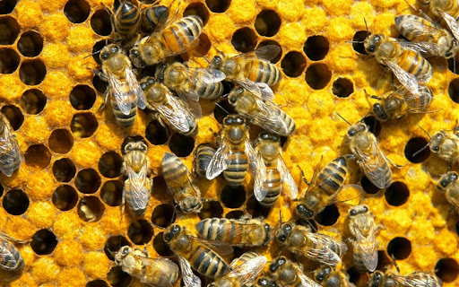
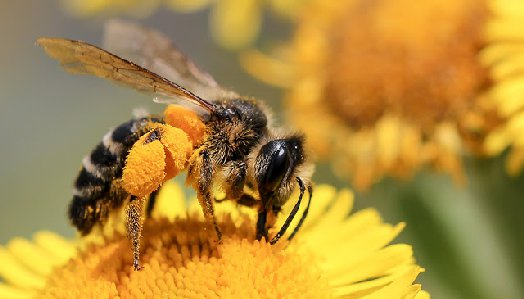

As abelhas são insetos sociais que vivem em colônias.
Na natureza, elas são responsáveis pela polinização, processo reprodutivo que a garante a produção de frutos e sementes nas plantas.
Existem vários agentes polinizadores como os insetos, pássaros e morcego. Porém, estima-se que 40% dos polinizadores no mundo sejam abelhas.
Essa situação demonstra o risco da extinção das abelhas, sendo uma ameaça à biodiversidade e ao homem.
As abelhas transportam o pólen. Com isso, garantem o desenvolvimento e reprodução das espécies, o equilíbrio dos ecossistemas e até mesmo, a produção de alimentos.
As abelhas podem ser especialistas ou generalistas. As abelhas especialistas visitam flores de espécies específicas, mantendo uma estreita relação com estas. Enquanto isso, as abelhas generalistas visitam flores de muitas espécies e utilizam diversas fontes de alimento.
O corpo da abelha é dividido em três partes: cabeça, tórax e abdômen. Na cabeça localizam-se os órgãos sensoriais e as glândulas mandibulares.
As antenas são fundamentais, pois possuem os sentidos da audição, olfato e tato. Pelo olfato, as abelhas reconhecem inimigos, companheiras e captam odores de flores.
A visão é composta por três olhos simples, na parte frontal da cabeça e por dois olhos compostos, na parte lateral da cabeça. As glândulas mandibulares dissolvem a cera e contribuem no processamento da geleia real.
No tórax localizam-se os órgãos locomotores. Possuem três pares de pernas e dois pares de asas. No abdômen localizam-se a vesícula melífera, estômago, intestino e as traqueias.Quando as abelhas possuem ferrão, eles ficam situados na extremidade do abdômen. Os zangões não possuem ferrão.
As abelhas operárias são as mais abundantes em uma colônia. Elas são responsáveis pelas manutenção da colmeia, defesa, cuidado com as crias, limpeza do ninho e alimentação dos integrantes da colônia.
Elas são diferenciadas pela presença da corbícula, uma estrutura em forma de cesto, onde carrega o pólen, resina ou barro. As abelhas-rainhas têm a função reprodutiva. Ela é capaz de colocar milhares de ovos por dia.
Os zangões são os machos reprodutores, gerados por partenogênese a partir de ovos não fecundados.